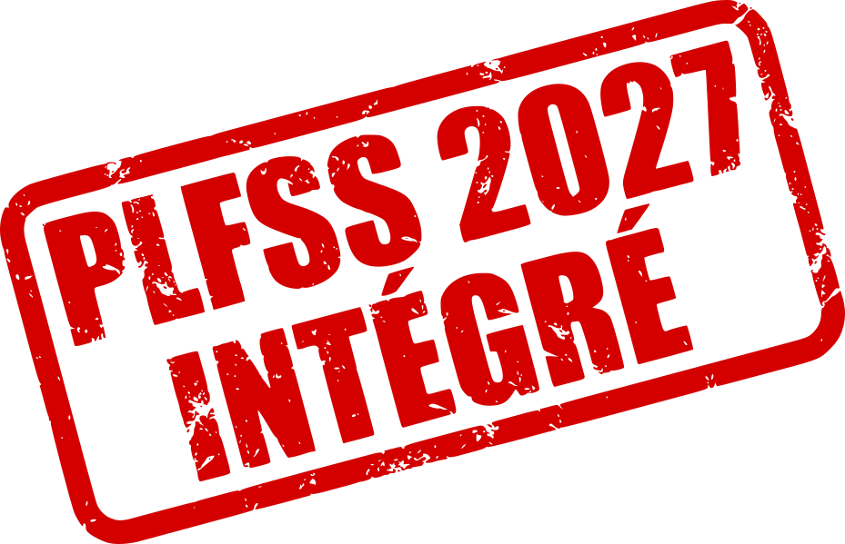

EXPLORATEUR · SÉCURITÉ SOCIALE
L’évolution des comptes sociaux.
Comparez les propositions, les lois votées et les résultats publiés.

Périmètre documenté. Les tableaux d’équilibre et d’ONDAM sont intégrés selon la couverture affichée. La collecte documentaire et l’exploitation des détails d’annexes restent distinctes.
Les branches, en détail
Md€Un zéro publié s’affiche 0. Une donnée non qualifiée conserve son absence et une explication. Cliquez sur un montant pour voir son tableau, sa ligne et sa colonne. Les propositions et rectifications restent séparées des résultats annuels.
Le corpus officiel
Le millésime filtre les documents, pas chaque montant cité : un document 2027 peut publier des résultats 2025 et des prévisions 2026. La recherche dans le contenu retrouve des passages avec leurs sources ; elle ne certifie pas les chiffres et n’est pas exhaustive. Sans texte saisi, le catalogue complet est présenté.